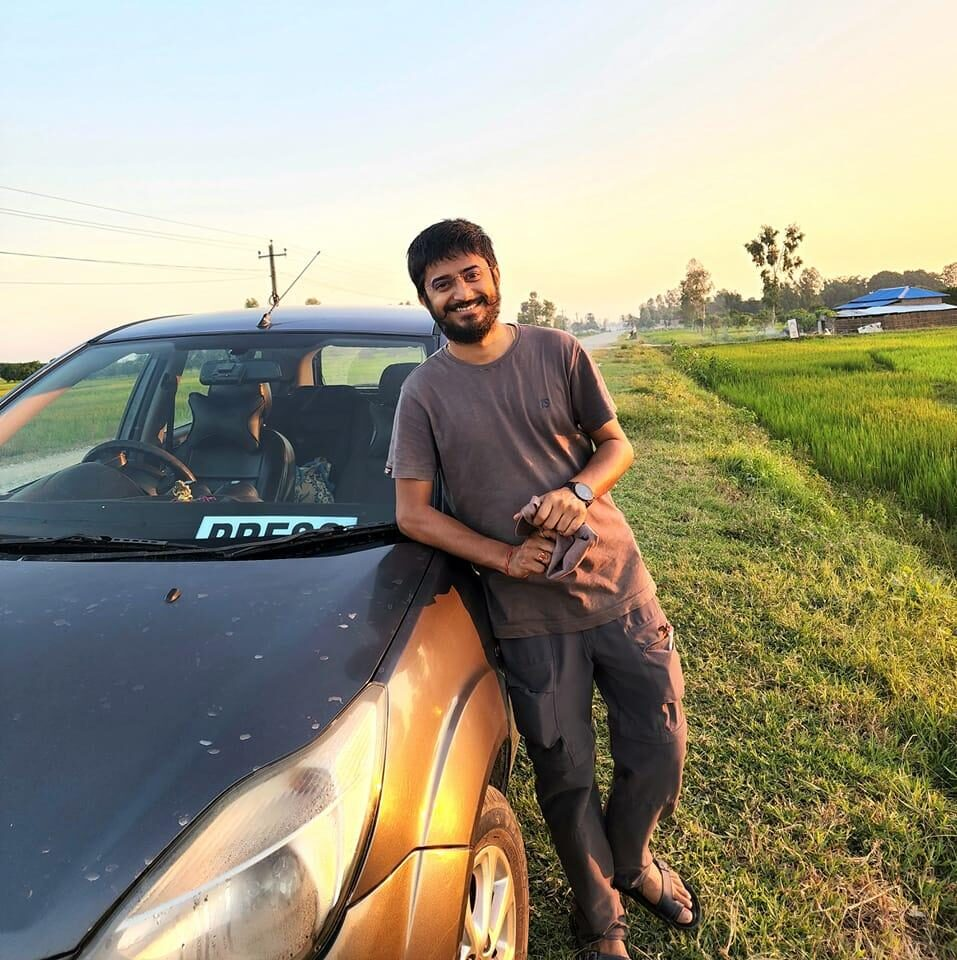

Launched on 18 February 2023 · Rajbiraj, Saptari · #SaptariNext
Saptari Next is a citizens' campaign that envisions the Saptari district of 2030, 2040 and 2050. It partners with individuals and organisations — at home and in the diaspora — to create a positive, conducive environment for the overall development of the district.
Saptari Next is not a political movement, an NGO project, or a one-off event. It is a long-horizon platform: a shared space where the people of Saptari can imagine the district's future together, and then organise the projects, programs, opinion research and publications needed to get there.
Professionals, students, farmers, entrepreneurs, artists and elders who contribute time, knowledge, networks and resources.
Community groups, cooperatives, businesses, schools and colleges, local governments, NGOs and diaspora associations that adopt or co-create initiatives.
Concrete, time-bound interventions with defined outcomes, handed over to local owners when complete.
Continuing streams of work across years, giving continuity between projects and building local capacity.
The listening pillar — surveys and consultations that keep the campaign accountable to the district.
The knowledge pillar — manuals, reports and studies from a shared, credible base of facts. The Manual is the first publication.
The four pillars are the campaign's operating core — the Action phase of a larger lifecycle. A Creation phase comes before them, and a Preservation phase carries their results beyond the campaign. Twelve P's, three phases, one cycle renewed at each horizon: 2030 → 2040 → 2050.
Purpose — why: the 2030·40·50 vision. Problem — what stands in the way: evidence and the District Profile. Planning — how: strategy and village development models. Partnership — who: individuals, organisations, diaspora. Provision — with what: the endowment fund, gathered before intervention and built to outlive any single project.
The four pillars, unchanged: Project, Program, Poll, Publication. Everything the campaign does in the district runs through them.
Policy — institutionalise what works into ward plans, budgets and frameworks. Practice — root it in community habit as ownership is handed over. Prosperity — the self-sustaining "Heart of Mithila" of 2050, which no longer needs the campaign at all.

Convener, Saptari Next
Sanjog Dev convenes the Saptari Next campaign from Rajbiraj. He has spent nearly a decade travelling across Saptari district — from the Koshi Barrage and the Sapta Koshi basin to the Chure (Churiya) hills — documenting its challenges and opportunities and building the networks the campaign now draws on.
He has collaborated with Maithili Wikimedians, MWUG and JCI on initiatives spanning photo exhibitions, leadership conferences and civic dialogues across the district. Through Saptari Next he works to connect individuals, organisations and the diaspora behind a shared, evidence-based vision of Saptari in 2030, 2040 and 2050.
His civic record runs well before the campaign's launch: General Secretary of JCI Rajbiraj in its 50th year (and Executive Vice President in its 49th), Secretary of the Buddha Harmony Foundation, and a board member of the Nepal Red Cross Society, Saptari — serving as the district's Covid-19 coordinator, visiting holding and isolation centres and coordinating ambulances through the pandemic before contracting Covid-19 himself. In 2019 he was a project coordinator for the Nepali Emerging Leaders Program (Leadership Academy Nepal, with the Kroc Institute at the University of San Diego), working with cohorts from Bardia to Dolkha. He represented Nepal at the first Nepal–Bangladesh Youth Conclave, and has taken part in election monitoring and survey work in the district.
This profile draws on the convener's public record; it will keep expanding as the campaign office organises the fuller archive.
Before Saptari Next, and alongside it: the convener's approach to civic organisations has been Tan Man Dhan Sewa — service of body, mind and wealth — strengthening institutions that already exist in the district rather than starting over. "A city is dead without civic society and citizen-driven organisations moving forward"; this record is his attempt, in whatever capacity and limited time available, to keep a few of them moving.
General Secretary in JCI Rajbiraj's 50th year and Executive Vice President in its 49th; an all-season supporter helping rejuvenate the chapter's goodwill and team-building. With JCI, organised road-safety outreach with the district traffic office as accidents rose on the newly built Hulaki Rajmarg, and represented Rajbiraj at JCI Bhaktapur, in Sauraha, and at an event in Charali.
General Secretary, 50th year EVP at Charali, 49th year Road safety with district traffic office In Sauraha for JCI Rajbiraj Representing at JCI Bhaktapur
Helped rejuvenate the Pratisthan under the Tan Man Dhan Sewa approach; it went on to host a women's cricket development event with the acting mayor and ward representatives.
With Cricket Bikash Pratisthan Women's cricket development event
Helped rejuvenate the Samiti in his personal capacity — one of several local organisations reactivated through direct, hands-on involvement rather than formal office.
Board member and the district's Covid-19 coordinator: visiting holding centres, isolation centres and coordinating ambulances across municipalities during the pandemic — often without basic protective gear — before being struck by Covid-19 himself for 19 days. Also active in the Society's annual convention and coordination meetings with the district president and higher authorities.
Red Cross board member Covid holding centre visit Holding centre, another municipality Isolation centre visit Tilathi Koiladi holding centre Holding centre, border area Pandemic fieldwork Online Covid coordination meeting Red Cross annual convention
Project coordinator in 2019 (Leadership Academy Nepal, with the Kroc Institute at the University of San Diego) — working with cohorts in Bardia, Kaski, Janakpur, Kathmandu and Dolkha, and with fellow team members at the UN House, Lalitpur. NELP 2018 in Saptari is where he first spoke publicly about the district's vision — the seed of what became Saptari Next.
Project coordinator, NELP NELP Bardia NELP Kaski, Pokhara NELP Janakpur NELP Kathmandu NELP at Madhesh Bhawan, Janakpur NELP Dolkha NELP team, UN House Lalitpur NELP 2018
Before the 18 February 2023 launch: a planning phase, a logo (credit — Roshan Thapa), and a launch-day presentation that set out the vision publicly for the first time.
Planning phase The Saptari Next logo Launch day presentation Launch day, cont'd
Also: the first Nepal–Bangladesh Youth Conclave, election monitoring and survey work in the district, and Patanjali Yoga Day events organised across several municipalities with Pankaj Deo and Team Patanjali.
Almost a decade of walking Saptari's ground — Shambhunath Temple, Gobargadha, Musahari Bishariya and the Koshi banks at Lalapatti among the many stops.
Shambhunath Temple Shambhunath travels I Shambhunath travels II Shambhunath travels III Shambhunath travels IV Tilathi Koiladi Gaupalika Gobargadha Koshi banks, Lalapatti (India border) Musahari Bishariya
Honorary and domain advisors — legal, media, business, engineering, diplomacy and more — guiding the campaign from every section of society.
TJB Sewa Trust, Setubandh, Tshirt Nepal and allied initiatives working with Saptari Next for the betterment of the district.
Publish the Campaign Manual (first edition, EN/NE) and the District Profile module series compiled by the campaign office.
Run the first district-wide poll on citizens' priorities and design the endowment fund's governance framework.
Launch the first flagship projects in energy, business incubation and conservation with partner organisations.